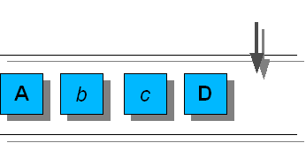
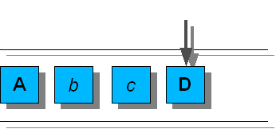
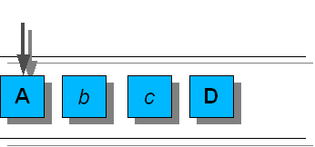

javax.swing.undo.AbstractUndoableEdit
javax.swing.undo.CompoundEdit
javax.swing.undo.UndoManager
javax.swing.undo.AbstractUndoableEdit
javax.swing.undo.CompoundEdit
javax.swing.undo.UndoManager
|
JavaTM 2 Platform Standard Ed. 6 |
|||||||||
| 上一个类 下一个类 | 框架 无框架 | |||||||||
| 摘要： 嵌套 | 字段 | 构造方法 | 方法 | 详细信息： 字段 | 构造方法 | 方法 | |||||||||
java.lang.Object
public class UndoManager
UndoManager 管理 UndoableEdit 列表，提供撤消或恢复适当编辑的方法。有两个方法可以将编辑添加到 UndoManager。直接使用 addEdit 方法添加编辑，或将 UndoManager 添加到支持 UndoableEditListener 的 bean。下面的例子创建了一个 UndoManager 并将它作为 UndoableEditListener 添加到 JTextField：
UndoManager undoManager = new UndoManager(); JTextField tf = ...; tf.getDocument().addUndoableEditListener(undoManager);
UndoManager 维护编辑的有序列表以及该列表中下一个编辑的索引。下一个编辑的索引为当前编辑列表的大小，如果已经调用了 undo，则该索引对应于已撤消的最后一个有效编辑的索引。调用 undo 时，所有的编辑（从下一个编辑的索引到最后一个有效编辑）都将以相反的顺序被撤消。例如，考虑由以下编辑组成的 UndoManager ：A b c D。粗体大写字母的编辑为有效编辑，斜体小写字母的编辑为无效编辑。
|  |
| Figure 1 |
如 figure 1 中所示，如果刚刚添加了 D，则下一个编辑的索引为 4。调用 undo 导致在 D 上调用 undo 并将下一个编辑的索引设置为 3（编辑 c），如下图所示。
|  |
| Figure 2 |
最后一个有效编辑为 A，所以调用 undo 会在 c、b、和A 上以该顺序再次调用 undo，并将下一个编辑的索引设置为 0，如下图所示。
|  |
| Figure 3 |
调用 redo 会导致在下一个编辑的索引和下一个有效编辑（或列表结尾位置）之间的所有编辑上调用 redo。继续上一个例子，如果调用了 redo，则将依次在 A、b 和 c 上调用 redo。此外，下一个编辑的索引被设置为 3 （如 figure 2 中所示）。
将一个编辑添加到 UndoManager 会移除从下一个编辑的索引到列表结尾位置的所有编辑。继续上一个例子，如果添加一个新的编辑 e，则从列表中移除编辑 D （在它上面调用 die 之后）。如果下一个编辑没有合并（c.addEdit(e) 返回 true）或替换（e.replaceEdit(c) 返回 true）c，则将新的编辑添加到 c 的后面，如下图所示。

|
| Figure 4 |
在 UndoManager 上调用了 end 后，超类行为将用于所有 UndoableEdit 方法。有关其行为的详细信息，请参阅 CompoundEdit。
不同于 Swing 的其他类，此类是线程安全的。
警告：此类的序列化对象与以后的 Swing 版本不兼容。当前序列化支持适用于短期存储，或适用于在运行相同 Swing 版本的应用程序之间进行 RMI（Remote Method Invocation，远程方法调用）。从 1.4 版本开始，已在 java.beans 包中添加了支持所有 JavaBeansTM 长期存储的功能。请参见 XMLEncoder。
| 字段摘要 |
|---|
| 从类 javax.swing.undo.CompoundEdit 继承的字段 |
|---|
edits |
| 从类 javax.swing.undo.AbstractUndoableEdit 继承的字段 |
|---|
RedoName, UndoName |
| 构造方法摘要 | |
|---|---|
UndoManager()
创建一个新的 UndoManager。 |
|
| 方法摘要 | |
|---|---|
boolean |
addEdit(UndoableEdit anEdit)
如果可能，将一个 UndoableEdit 添加到此 UndoManager。 |
boolean |
canRedo()
如果可以恢复编辑，则返回 true。 |
boolean |
canUndo()
如果可以撤消编辑，则返回 true。 |
boolean |
canUndoOrRedo()
如果可以调用 undo 或 redo，则返回 true。 |
void |
discardAllEdits()
清空撤消管理器，向进程中的每个编辑发送一个 die 消息。 |
protected UndoableEdit |
editToBeRedone()
如果调用 redo，则返回下一个要恢复的有效编辑。 |
protected UndoableEdit |
editToBeUndone()
如果调用 undo，则返回下一个要撤消的有效编辑。 |
void |
end()
将此 UndoManager 转换为标准 CompoundEdit。 |
int |
getLimit()
返回此 UndoManager 保持的最大编辑数。 |
String |
getRedoPresentationName()
返回此编辑可恢复形式的描述。 |
String |
getUndoOrRedoPresentationName()
一个便捷方法，它返回 getUndoPresentationName 或 getRedoPresentationName。 |
String |
getUndoPresentationName()
返回此编辑可撤消形式的描述。 |
void |
redo()
恢复适当的编辑。 |
protected void |
redoTo(UndoableEdit edit)
恢复从下一个编辑的索引到 edit 的所有更改，适当地更新下一个编辑的索引。 |
void |
setLimit(int l)
设置此 UndoManager 保持的最大编辑数。 |
String |
toString()
返回显示和标识此对象属性的字符串。 |
protected void |
trimEdits(int from,
int to)
移除指定范围内的编辑。 |
protected void |
trimForLimit()
以下一个编辑的索引为中心，将已排队编辑的数量减少到限制的大小范围内。 |
void |
undo()
撤消适当的编辑。 |
void |
undoableEditHappened(UndoableEditEvent e)
一个 UndoableEditListener 方法。 |
void |
undoOrRedo()
一个便捷方法，它调用 undo 或 redo。 |
protected void |
undoTo(UndoableEdit edit)
撤消从下一个编辑的索引到 edit 的所有更改，适当地更新下一个编辑的索引。 |
| 从类 javax.swing.undo.CompoundEdit 继承的方法 |
|---|
die, getPresentationName, isInProgress, isSignificant, lastEdit |
| 从类 javax.swing.undo.AbstractUndoableEdit 继承的方法 |
|---|
replaceEdit |
| 从类 java.lang.Object 继承的方法 |
|---|
clone, equals, finalize, getClass, hashCode, notify, notifyAll, wait, wait, wait |
| 构造方法详细信息 |
|---|
public UndoManager()
UndoManager。
| 方法详细信息 |
|---|
public int getLimit()
UndoManager 保持的最大编辑数。小于 0 的值指示编辑数不受限制。
UndoManager 保持的最大编辑数addEdit(javax.swing.undo.UndoableEdit),
setLimit(int)public void discardAllEdits()
die 消息。
AbstractUndoableEdit.die()protected void trimForLimit()
protected void trimEdits(int from,
int to)
die， 并从编辑列表中移除它们。如果 from > to，则此方法没有任何效果。
from - 要移除的最小索引to - 要移除的最大索引public void setLimit(int l)
UndoManager 保持的最大编辑数。小于 0 的值指示编辑数不受限制。如果需要丢弃编辑以缩小限制，则将以添加编辑的相反顺序对其调用 die。默认值为 100。
l - 新的限制
RuntimeException - 如果不再执行此 UndoManager（调用了 end）CompoundEdit.isInProgress(),
end(),
addEdit(javax.swing.undo.UndoableEdit),
getLimit()protected UndoableEdit editToBeUndone()
undo，则返回下一个要撤消的有效编辑。如果没有要撤消的编辑，则此方法返回 null。
protected UndoableEdit editToBeRedone()
redo，则返回下一个要恢复的有效编辑。如果没有要恢复的编辑，则此方法返回 null。
protected void undoTo(UndoableEdit edit)
throws CannotUndoException
edit 的所有更改，适当地更新下一个编辑的索引。
CannotUndoException - 如果其中一个编辑抛出 CannotUndoException
protected void redoTo(UndoableEdit edit)
throws CannotRedoException
edit 的所有更改，适当地更新下一个编辑的索引。
CannotUndoException - 如果其中一个编辑抛出 CannotUndoException
CannotRedoException
public void undoOrRedo()
throws CannotRedoException,
CannotUndoException
undo 或 redo。如果已撤消了所有编辑（下一个编辑的索引小于编辑列表的长度），则此方法调用 redo，否则调用 undo。
CannotUndoException - 如果其中一个编辑抛出 CannotUndoException
CannotRedoException - 如果其中一个编辑抛出 CannotRedoExceptioncanUndoOrRedo(),
getUndoOrRedoPresentationName()public boolean canUndoOrRedo()
undo 或 redo，则返回 true。
canUndoOrRedo 有效，则返回 trueundoOrRedo()
public void undo()
throws CannotUndoException
end，则通过此方法调用超类，否则此方法对下一个编辑的索引和最后一个有效编辑之间的所有编辑调用 undo，适当地更新下一个编辑的索引。
UndoableEdit 中的 undoCompoundEdit 中的 undoCannotUndoException - 如果其中一个编辑抛出 CannotUndoException 或没有要撤消的编辑CompoundEdit.end(),
canUndo(),
editToBeUndone()public boolean canUndo()
end，则此方法返回来自超类的值。否则，如果有要撤消的编辑（editToBeUndone 返回非 null），则此方法返回 true。
UndoableEdit 中的 canUndoCompoundEdit 中的 canUndoCompoundEdit.canUndo(),
editToBeUndone()
public void redo()
throws CannotRedoException
end，则此方法调用超类，否则此方法对下一个编辑的索引和下一个有效编辑之间的所有编辑调用 redo，适当地更新下一个编辑的索引。
UndoableEdit 中的 redoCompoundEdit 中的 redoCannotRedoException - 如果其中一个编辑抛出 CannotRedoException 或没有要恢复的编辑CompoundEdit.end(),
canRedo(),
editToBeRedone()public boolean canRedo()
end，则此方法返回来自超类的值。否则，如果有要恢复的编辑（editToBeRedone 返回非 null），则此方法返回 true。
UndoableEdit 中的 canRedoCompoundEdit 中的 canRedoCompoundEdit.canRedo(),
editToBeRedone()public boolean addEdit(UndoableEdit anEdit)
UndoableEdit 添加到此 UndoManager。此方法移除从下一个编辑的索引到编辑列表结尾位置的所有编辑。如果已调用了 end，则不添加该编辑并返回 false。如果没有调用 end，则此方法返回 true。
UndoableEdit 中的 addEditCompoundEdit 中的 addEditanEdit - 要添加的编辑
anEdit 合并到此编辑，则返回 trueCompoundEdit.end(),
CompoundEdit.addEdit(javax.swing.undo.UndoableEdit)public void end()
UndoManager 转换为标准 CompoundEdit。这将移除所有已撤消的编辑。
CompoundEdit 中的 endCompoundEdit.end()public String getUndoOrRedoPresentationName()
getUndoPresentationName 或 getRedoPresentationName。如果下一个编辑的索引等于编辑列表的大小，则返回 getUndoPresentationName，否则返回 getRedoPresentationName。
public String getUndoPresentationName()
end，则通过此方法调用超类。否则，如果有要撤消的编辑，则此方法返回下一个将要撤消的有效编辑的值。如果没有要撤消的编辑且没有调用 end，则此方法返回取自 UIManager 属性“AbstractUndoableEdit.undoText”的值。
UndoableEdit 中的 getUndoPresentationNameCompoundEdit 中的 getUndoPresentationNameundo(),
CompoundEdit.getUndoPresentationName()public String getRedoPresentationName()
end ，则此方法调用到超类。否则，如果有要恢复的编辑，此方法返回下一个将要恢复的有效编辑的值。如果没有要恢复的编辑且没有调用 end，则此方法返回取自 UIManager 属性“AbstractUndoableEdit.redoText”的值。
UndoableEdit 中的 getRedoPresentationNameCompoundEdit 中的 getRedoPresentationNameredo(),
CompoundEdit.getRedoPresentationName()public void undoableEditHappened(UndoableEditEvent e)
UndoableEditListener 方法。此方法使用 e.getEdit() 调用 addEdit。
UndoableEditListener 中的 undoableEditHappenede - 要从中添加 UndoableEditEvent 的 UndoableEditEventaddEdit(javax.swing.undo.UndoableEdit)public String toString()
CompoundEdit 中的 toString
|
JavaTM 2 Platform Standard Ed. 6 |
|||||||||
| 上一个类 下一个类 | 框架 无框架 | |||||||||
| 摘要： 嵌套 | 字段 | 构造方法 | 方法 | 详细信息： 字段 | 构造方法 | 方法 | |||||||||
版权所有 2008 Sun Microsystems, Inc. 保留所有权利。请遵守GNU General Public License, version 2 only。